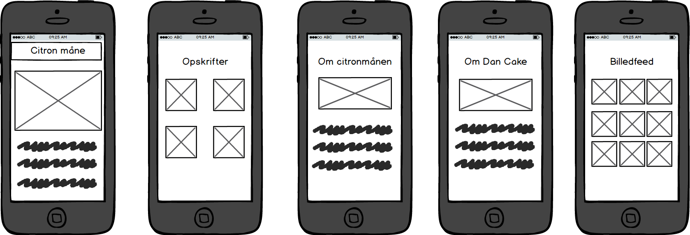

Portfolio 2017
Projekter
Design Thinking
Dette var et projekt, der havde mere fokus på at vi skulle lære noget af processen end på produktet.
Vi fik en case præsenteret, hvor vi skulle udarbejde en prototype på en app, der skulle gøre livet lettere for håndværkere og private bygherrer.
Vi skulle dog kun arbejde med appen til det stadie hvor vi havde lavet den første prototype - i dette tilfælde en paper protoype.
Noget af det der var allermest fokus på, det var at blive i faserne selvom det var svært. Vi startede med en fase, der drejede sig om vidensindsamling,
hvor vi bl.a. anvendte brugercentreret metode til at indsamle så meget viden som muligt. I denne fase måtte vi ikke begynde at idégenerere, og det var meget svært for min gruppe.
Onepage projektet
Til Onepage projektet blev vi inddelt i to-mands grupper, og vi trak hver et tilfældigt produkt, der kan købes i et almindeligt supermarked.
Min gruppe trak Citronmånen, som altså var det produkt vi skulle designe og kode en hjemmeside for.
Projektet strakte sig over to uger og var inddelt i to faser: research- og designfasen samt implementeringsfasen.
Derudover skulle projektet styres efter SCRUM-principperne.
Reseachfasen
Min gruppe besluttede os for at supplere den brugercentrerede metode med personlige interviews med et spørgeskema.
På baggrund af vores interviews og vores spørgeskema udpegede vi tre personaer, der også tæller som vores målgrupper.
Personaer
Den første persona stammer fra vores interviews, og det er Allan på 44 år. Han er gift og arbejder til daglig som sagsbehandler i FOA.
I sin fritid er han fodboldtræner og han køber citronmåne når det frister til eftermiddagskaffen der er altså tale om et impulskøb.
Han elsker hygge og for ham vækker citronmånen barndomsminder.
Den anden persona hedder Pia hun er 53 år, gift og arbejder som kontorassistent i Tulip Food Company.
Pia elsker håndarbejde og bager hellere selv i stedet for at købe kage.Pia associerer citronmånen med noget som hendes bror spiser i sit tømrerfirma.
Den sidste persona stammer fra vores spørgeskema og har ikke noget navn. Personen er 22 år og bor i Midtjylland
Den sidste persona er studerende og går ikke særlig meget op i sundhed. Han eller hun køber kage fordi det er nemt, men køber kage forholdsvis sjældent
User Stories
Efter at have fastsat vores målgrupper vha. personaer, udarbejdede vi to user stories, der skulle hjælpe os med at klarlægge hvad vores hjemmeside skulle bruges til.
Den første user story er; som en forbruger vil jeg læse mere om en kage klassiker så jeg kan få vækket gamle minder fra min barndom.
Den anden user story er; som en kageentusiast vil jeg finde en måde at gøre den klassiske citronmåne endnu mere lækker på så jeg kan imponere til eftermiddagskaffen eller kageordningen
Feature/unfeature liste og indholdshierarki
Udfra vores research samt vores user stories kom vi frem til, hvilke features der skulle være på vores hjemmeside, og hvilke der ikke skulle være der.
Det resulterede i en feature/unfeature liste.
Af features bestemte vi os for at der skulle være: opskrifter med citronmånen, om citronmånen, om Dancake, kampagne for citronmånens 50 års jubilæum og et SoMe plugin
Vi havde selvfølgelig også nogle unfeatures som er: køb og salg, om andre kager fra Dancake, nostalgiske historier og politijokes.
Efter at have udarbejdet vores feature/unfeature liste gik vi videre til at lave et indholdshierarki hvor vi bestemte os for, hvilke af vores features der er de vigtigste.
Indholshierarkiet ser sådan ud: Kampagne for Citronmånens 50 års jubilæum, Opskrifter med Citronmånen, Om citronmånen, SoMe (her som instagram feed) og Om Dancake.
Moodboard
Efter alt vores research var færdig gik vi i gang med at lave et moodboard, der skulle visualisere hvordan vi gerne vil have vores hjemmeside til at se ud.
Her er det både med farvevalg, fotostil og typografi.

Vi valgte et farvetema der tager udpangspunkt i Citronmånens indpakning, med den meget genkendelige gule farve. Herefter kørte vi et analogt farvetema, med den lysegrønne farve.
Endelig valgte vi den mørkebrune farve dels pga. kontrasten men også til dels fordi den indgår i indpakningen, og derfor er let tilgængelig.
Herfter valgte vi en fotostil hvor vi fokuserede på en meget nostalgisk stil, da nostalgien ved en citronmåne er et gennemgående tema.
Desuden er denne nostalgiske og hyggelige fotostil noget man ser på mange mad- og kageblogs, og den stil ville vi også gerne forsøge at ramme.
Den nostalgiske stil ses også tydeligt på moodboardet.
Til sidst tog vi stilling til typografien og her tog vi igen udgangspunkt i citronmånens indpakning, da vi skulle vælge skrifttyper.
Vi valgte at bruge fonte fra Google Fonts, da de er gratis og meget nemme at putte ind i koden.
Som overskrift har vi valgt den font der hedder Yesteryear som er en script font, og minder meget om den font der bruges på citronmånens indpakning.
Til brødteksten har vi valgt at bruge den font der hedder Open Sans, der igen minder meget om den der er på indpakningen.
Wireframes
Til sidst inden vi begyndte at kode udarbejdede vi wireframes til vores tre versioner. Herover ses en af vores wireframes, nemlig den til mobilversionen.
Wireframesne skulle bruges til at visualisere hvordan vores hjemmeside ville komme til at se ud, og give os noget at gå udfra når vi skulle kode.
Det færdige produkt
Så kom tiden hvor vi skulle til at kode hele skidtet, og der skal jeg ærligt indrømme at jeg overlod styringen til min makker.
Selvom jeg overlod styringen til ham, føler jeg ikke, at jeg gik glip af noget læringsmæssigt ift. at kode, og jeg deltog også stadig aktivt i processen.